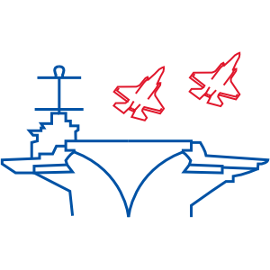

Hey, I'm Jacob Kinley

HoloLens Messenger

Design and prototype of a messaging app for the Microsoft HoloLens.
Fluent Design File Explorer

A redesign of the Windows File Explorer using the Microsoft Fluent Design System guidelines.
Web and Mobile II Final Project
Individual project to create a website about my favorite place. Utilizes css grid for layout and php for page creation.
I’m a 4th year Human Centered Computing student at Rochester Institute of Technology. I originally came in as a computer science student, but learned that I was drawn more to the design and usability of the systems I was working on than the algorithms behind them. Halfway through my second year, I learned about a new major called Human Centered Computing and instantly knew it was the right fit. I’m refactoring how I approach problem-solving, but that’s just another step in the development of a better me.
I am a student ambassador for my major’s department, and I have stepped into a leadership position because of it. I oversee bringing student feedback and criticism to the department’s attention. I am also the President of the RIT UX Club where I run club meetings.
I believe programs and interfaces should augment the user. They should elicit a sense of discovery, play, and achievement. They should not feel mysterious, unwieldy, or hard to use. The end goals of programs and interfaces vary widely, but the user experiences should follow these core tenets.
Feel free to have a look at my resume or reach out to me!